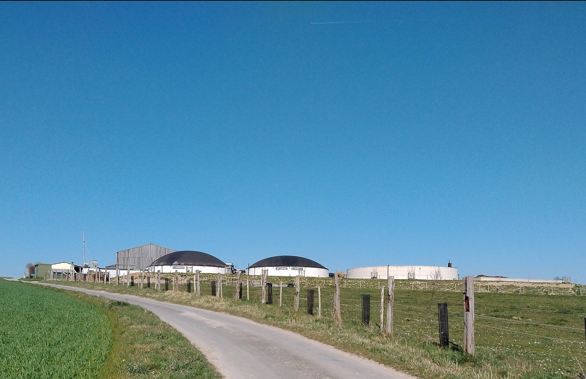

프랑스 시민 가스 협동조합 '가즈쿱', 출자 모집 일주일 만에 조합원 100여 명이 15만6,000유로

전력협동조합 에네르쿠프 사람들이 세운 협동조합형 가스 공급사…공급부터 시작해 생산 설비로 넓히고, 천연가스 혼합 여부는 조합원이 정하기로
프랑스에서 시민이 조합원으로 출자해 가스를 공급하는 협동조합 '가즈쿱(Gazcoop)'이 출자 모집을 시작한 지 일주일이 채 안 돼 조합원 100명가량에게서 약 15만6,000유로를 모았다. 전기 분야에서는 협동조합 공급사 에네르쿠프(Enercoop)가 20년 동안 활동해 왔지만, 가스 공급을 협동조합 방식으로 하는 것은 처음인 것으로 알려졌다. 가즈쿱은 에네르쿠프와 뿌리가 같아, 쥘리앵 노에(Julien Noé) 에네르쿠프 이사장이 공동 설립자로 참여했고 다른 공동 설립자들과 아드리앵 장테(Adrien Jeantet) 사무총장도 에네르쿠프에서 일했거나 일하고 있으며, 에네르쿠프 본사와 페이드라루아르 지역 조직도 출자자로 이름을 올렸다. 가즈쿱은 우선 가스 배관망에 연결된 가정에 공급하고 이어 지자체 등 사업자로 넓힌 뒤, 그다음에야 직접 생산을 검토하며 이때 조합원에게는 설비 투자 참여가 붙은 요금을 내놓을 계획이다. 장테 사무총장은 "지금은 자기자본을 모으고 있다"며 차입보다 조합원 출자를 먼저 쌓겠다고 밝혔다. 중소 규모 시설에서 나온 바이오가스만 공급하는 것이 목표지만 값이 비싸 천연가스를 일부 섞는 안도 나왔고, 이 문제는 전체 조합원이 결정하기로 했다.
시민에너지 관점
일주일도 안 돼 100명가량이 15만6,000유로를 낸 것은 전기 협동조합이 20년 동안 쌓은 조합원과 신뢰가 새 에너지 분야를 여는 밑천이 될 수 있음을 보여 준다. 작은 협동조합이 값이 출렁이는 가스 시장에서 버틸 수 있느냐는 걱정이 나오지만, 가즈쿱은 빚보다 출자로 자기자본을 먼저 쌓고 재생가스 비율처럼 값과 원칙이 부딪치는 문제를 조합원 투표에 맡기는 길을 택했다. 공급부터 시작해 고객이 모이면 생산 설비에 조합원 투자를 붙이는 순서는, 에너지 사업의 이익과 결정권이 처음부터 시민에게 남도록 하는 설계다. 국내에서도 태양광 전기에 머물러 있는 시민 협동조합이 마을의 열과 바이오가스로 영역을 넓힐 수 있도록, 협동조합의 에너지 공급·판매 참여 문을 넓히는 제도 논의를 시작해야 한다.
출처: GreenUnivers 2026-10-29 Paul Messad 원문 보기
フランスの市民ガス協同組合「ガズクープ」、出資募集から1週間で組合員約100人が15万6,000ユーロ
電力協同組合エネルクープの関係者が設立した協同組合型ガス供給会社…供給から始めて生産設備へ広げ、天然ガスの混合は組合員が決める
フランスで市民が組合員として出資しガスを供給する協同組合「ガズクープ（Gazcoop）」が、出資募集を始めてから1週間足らずで約100人の組合員から約15万6,000ユーロを集めた。電力分野では協同組合型の供給会社エネルクープ（Enercoop）が20年にわたり活動してきたが、ガス供給を協同組合の形で行うのは初めてとされる。ガズクープはエネルクープと根を同じくし、エネルクープのジュリアン・ノエ（Julien Noé）理事長が共同設立者に加わり、ほかの共同設立者とアドリアン・ジャンテ（Adrien Jeantet）事務総長もエネルクープで働いたか現在働いており、エネルクープ本体とペイ・ド・ラ・ロワール地域の組織も出資者に名を連ねた。ガズクープはまずガス導管網につながる家庭に供給し、続いて自治体などの事業者に広げ、その後に初めて自前の生産を検討する計画で、その際には組合員に設備投資への参加を組み合わせた料金を提示するという。ジャンテ事務総長は「今は自己資本を集めている」と述べ、借り入れより組合員の出資を先に積み上げる考えを示した。中小規模の施設で生まれたバイオガスだけを供給するのが目標だが、価格が高いため天然ガスを一部混ぜる案も出ており、この問題は組合員全体で決めることになった。
市民エネルギーの視点
1週間足らずで約100人が15万6,000ユーロを出資したことは、電力協同組合が20年にわたり積み上げた組合員と信頼が、新しいエネルギー分野を切り開く元手になりうることを示している。小さな協同組合が価格変動の大きいガス市場で持ちこたえられるのかという懸念もあるが、ガズクープは借金より出資で自己資本を先に築き、再生ガスの比率のように価格と原則がぶつかる問題を組合員の投票に委ねる道を選んだ。供給から始め、顧客が集まれば生産設備に組合員の投資を組み合わせる順序は、エネルギー事業の利益と決定権を最初から市民の手に残す設計だ。韓国でも太陽光の電気にとどまっている市民協同組合が、地域の熱やバイオガスへと領域を広げられるよう、協同組合のエネルギー供給・販売への参加の門戸を広げる制度の議論を始めるべきだ。
出典: GreenUnivers 2026-10-29 ポール・メサド（Paul Messad） 原文を読む
法国公民燃气合作社Gazcoop开放入股一周内，约100名社员认缴15.6万欧元
由电力合作社Enercoop人士创办的合作社型燃气供应商…先做供应再扩展到生产设施，是否掺入天然气由社员决定
在法国，由市民以社员身份出资供应燃气的合作社Gazcoop开放入股不到一周，就从约100名社员处筹得约15.6万欧元。电力领域里，合作社型供应商Enercoop已运营20年，但以合作社形式供应燃气据称尚属首次。Gazcoop与Enercoop同根同源：Enercoop理事长朱利安·诺埃（Julien Noé）是联合创办人之一，其他联合创办人和总干事阿德里安·让泰（Adrien Jeantet）也曾在或正在Enercoop工作，Enercoop本部及卢瓦尔河地区的地方组织也已入股。Gazcoop计划先向接入燃气管网的家庭供气，再扩大到地方政府等单位用户，之后才考虑自行生产，届时将向社员推出附带设施投资参与的价格方案。让泰表示"目前我们在筹集自有资本"，先靠社员出资而非借贷打底。其目标是只供应中小型设施生产的沼气，但因价格偏高，也有人提出掺入部分天然气，这一问题将交由全体社员决定。
市民能源视角
不到一周约100人认缴15.6万欧元，说明电力合作社20年来积累的社员与信任，可以成为开拓新能源领域的本钱。有人担心小合作社难以在价格波动大的燃气市场站稳，但Gazcoop选择先以入股而非举债筑牢自有资本，并把可再生燃气比例这类价格与原则相冲突的问题交给社员投票。先做供应、客户聚集后再让社员投资生产设施，这一顺序让能源事业的收益和决定权从一开始就留在市民手中。韩国停留在光伏发电的市民合作社，也应能把领域扩展到地方的热能和沼气，现在就该着手讨论放宽合作社参与能源供应和销售的制度。
来源: GreenUnivers 2026-10-29 保罗·梅萨德（Paul Messad） 查看原文
French citizen gas cooperative Gazcoop raises 156,000 euros from about 100 members in under a week
Founded by people from electricity cooperative Enercoop, the co-op will start with supply before moving into production, and members will decide whether to blend in natural gas
Gazcoop, a French cooperative in which citizens invest as members to supply gas, has raised about 156,000 euros from roughly 100 members less than a week after opening its share offer. In electricity, the cooperative supplier Enercoop has been operating for 20 years, but supplying gas as a cooperative is said to be a first. Gazcoop shares its roots with Enercoop: Enercoop chair Julien Noé is a co-founder, the other co-founders and director general Adrien Jeantet have worked or still work at Enercoop, and Enercoop itself and its Pays de la Loire regional branch are among the investors. Gazcoop plans to supply households connected to the gas grid first, then businesses led by local authorities, and only after that consider producing its own gas, at which point members would be offered a tariff that includes a stake in production assets. "For the moment, we are looking for equity," Jeantet said, signalling that member capital comes before borrowing. The aim is to supply only biogas from small and medium-sized plants, but because it is expensive a proposal to blend in some natural gas has been put forward, and all members will decide on it.
Citizen Energy View
About 100 people putting in 156,000 euros in under a week shows that the members and trust an electricity cooperative has built over 20 years can become seed capital for opening up a new energy field. Some will doubt that a small cooperative can survive in a volatile gas market, but Gazcoop has chosen to build equity from member shares before debt and to put questions where price and principle collide, such as the share of renewable gas, to a member vote. Starting with supply and adding member investment in production once customers are in place is a design that keeps the profits and decision-making of the energy business with citizens from the start. Korea's citizen cooperatives, still largely confined to solar electricity, should be able to expand into local heat and biogas, and the debate on opening energy supply and retail to cooperatives should begin now.
Source: GreenUnivers 2026-10-29 Paul Messad Read the original